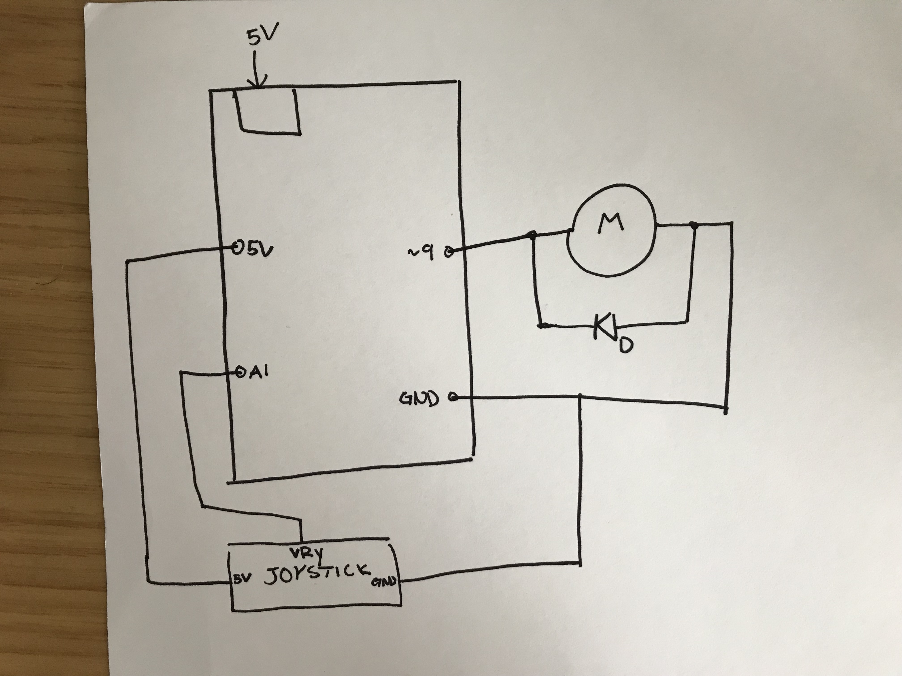
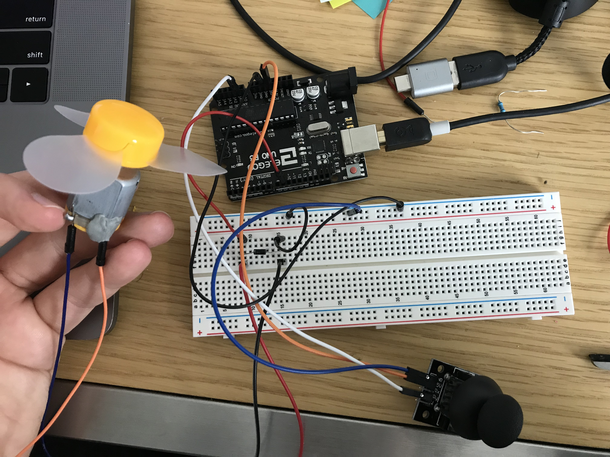

Ben's Assignment 5: Motors
Schematic

Here is the schematic. It is pretty simple, since both pieces of hardware I used had the resistance and all that good stuff built in. Since I used a DC motor, I used a flyback diode.
Circuit

This is my circuit. I only connect power, ground, and VRy on the joystick to the arduino because in my design, I did not need the switch or the VRx value.
Code Snippet
int yPin = A1; // pin for reading the yValue
int yVal = 0; // the actual yValue
int motor = 9; // the pin the motor is connected to
void setup() {
pinMode(motor, OUTPUT); //setting motor to output
Serial.begin(9600); //initializing seriol logging
}
void loop() {
yVal = analogRead(yPin); // getting the value from the pin
Serial.print("y = "); //printing it to check the value
Serial.println(yVal); //printint it to check the value
yVal = 1023 - yVal; //since all the way up is 0, and all the way down was 1023,
// I wanted to switch that around to make it more intuitive
int motorVal = map(yVal, 0, 1023, 100, 255); //had to map the motor to make it have
//acceptable values
analogWrite(motor, motorVal); // telling the motor how fast I want it
delay(15); // 15ms delay
}
Here it is in Action!

When you move the joystick up, the motor speeds up, and when you tilt it down, the motor slows down. I mapped the values from between 100 and 255 because the motor doesn't spin at all underneath the value of 100 assumingly due to the friction inside of the motor.